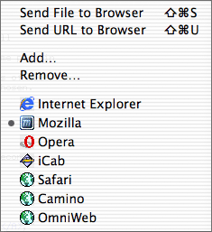

Sending the window to your browser

To send a document to a browser for viewing use the menu.
- The browser currently marked in this menu is the one your documents
will be sent to when you use Send File to
Browser or Send URL to Browser.
- To change browser, select the browser's menu item to mark it. When
you select a browser in the menu Alpha also sends the window to the
browser.
- If you want to switch browser without sending the window to it,
hold down the option key while selecting the browser in the menu.
- To send the URL to the browser automatically when you select a browser
in the menu, hold down the shift key.
- You edit the menu by using Add and Remove.
Send File to Browser
Launches your
browser and sends the document to it.
Send URL to Browser
Launches your
browser and sends the document URL to it. The URL is defined in the
Home Pages dialog. This feature is useful when you
edit the document directly on the server and the document contains server
side scripting.
Note! Some browsers do not reload the page if you send
the same URL several times.
You can only have one version of each browser in the menu, but you can
still send files to any version from Alpha. If any version of the browser
is running, Alpha will send to file to that one.
Previous page
Next page